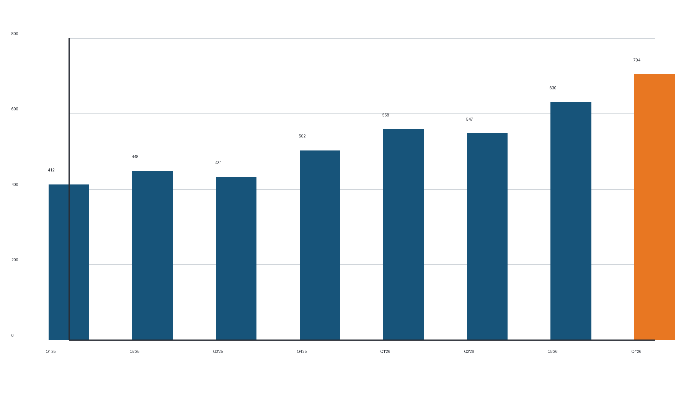
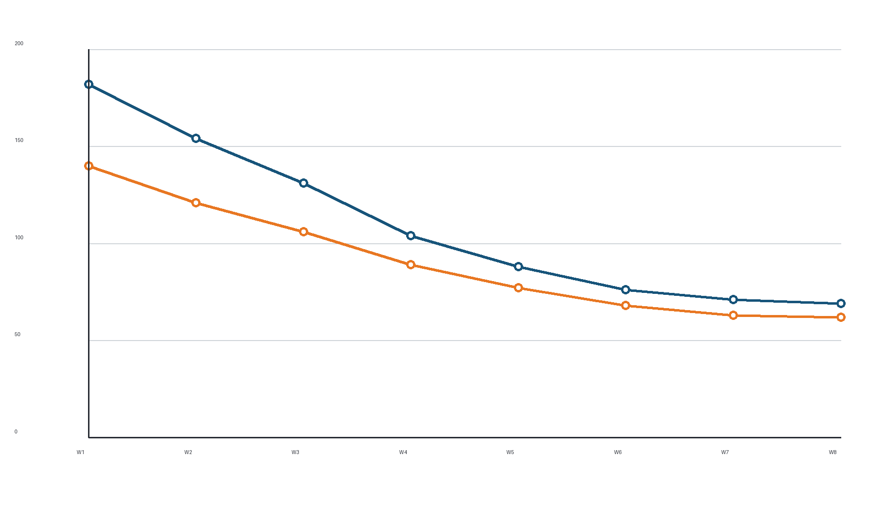

Throughput and Reliability at Print Resolution — Technical Report TR-2026-04
Modern edge platforms are judged on two axes: sustained throughput under mixed workloads, and tail latency under failure. This report summarizes eight quarters of production telemetry for the Helios Edge Platform, covering 214 deployment sites and a sustained load of 1.4 billion requests per day. The data shows a 70% improvement in sustained throughput since Q1 2025 alongside a 62% reduction in 99th-percentile latency, and it describes the architectural changes responsible: a redesigned request scheduler, adaptive retry budgets, and a new replication protocol that treats bandwidth as a first-class schedulable resource.
The headline numbers are easy to state. Sustained throughput per site rose from 412 requests per second to 704 over eight quarters. Tail latency at the 99th percentile fell from 182 milliseconds to 69. Both curves smoothed markedly after the Q2 2026 scheduler rewrite: the quarter-to-quarter variance in throughput, which had oscillated between 4% and 9% of mean, tightened to under 2%. Provisioning decisions that previously required manual headroom analysis are now made by the platform's capacity planner, which projects demand four weeks out with a measured error of 3.1%.

Telemetry is sampled at one-second resolution and aggregated into five-minute buckets before analysis. The workload mix has been stable across the observation window: 58% reads, 31% writes, and 11% batch analytics traffic. Read-heavy sites in Scandinavia and the Pacific Northwest show measurably different cache-miss profiles than the write-heavy financial-services sites concentrated in the North American corridor, and the scheduler now weights these profiles when placing background work.
The original scheduler treated every request identically and relied on kernel-level fair queuing to arbitrate. That model degraded once any single tenant sustained more than 40% of a node's capacity: head-of-line blocking appeared, and the tail stretched before the mean moved at all.Latency classes are assigned at admission from the request's route annotation; batch traffic is demoted for the remainder of its session after three interactive-class departures. The redesigned scheduler classifies requests into three latency classes at admission, maintains per-class token buckets, and defers batch work whenever interactive queues exceed 55% depth. Figure 2 shows the effect on both latency classes over the eight-quarter window.

Capacity planning used to be the platform team's most manual process. The model now in production forecasts per-site demand using a seasonal decomposition with a four-week horizon and schedules proactive rebalancing into the same maintenance windows as ordinary patching. The forecast's measured error against actual demand is summarized below.
| Quarter | Forecast error (mean abs.) | Rebalances scheduled | Emergency capacity events |
|---|---|---|---|
| Q1 2026 | 5.8% | 34 | 3 |
| Q2 2026 | 4.1% | 41 | 1 |
| Q3 2026 | 3.4% | 47 | 1 |
| Q4 2026 (proj.) | 3.1% | 52 | 0 |
Replication moved from a quorum-of-five model to a dynamic protocol that scales the replica set with the observed durability requirement of each key range. Hot ranges carry five replicas and absorb read fan-out; cold ranges settle at three. The protocol treats inter-site bandwidth as a schedulable resource, so a site that is saturated for user traffic receives proportionally less replication background load rather than competing with it. Failover drills run weekly in staging and monthly in production, and the last six drills completed within their two-minute objective with a median of 71 seconds.
scheduler: latency_classes: [interactive, batch, admin] interactive_depth_soft_limit: 0.55 replication: hot_replicas: 5 cold_replicas: 3 bandwidth_fair_share: true
Eight quarters of telemetry support a simple conclusion: predictable performance at the tail comes from class-aware scheduling, and capacity becomes a solved problem when forecasting and rebalancing share one closed loop. The platform team's roadmap for 2027 extends the same discipline to cross-region consistency semantics, where early prototypes show a further 20% reduction in tail latency for read-after-write workloads.